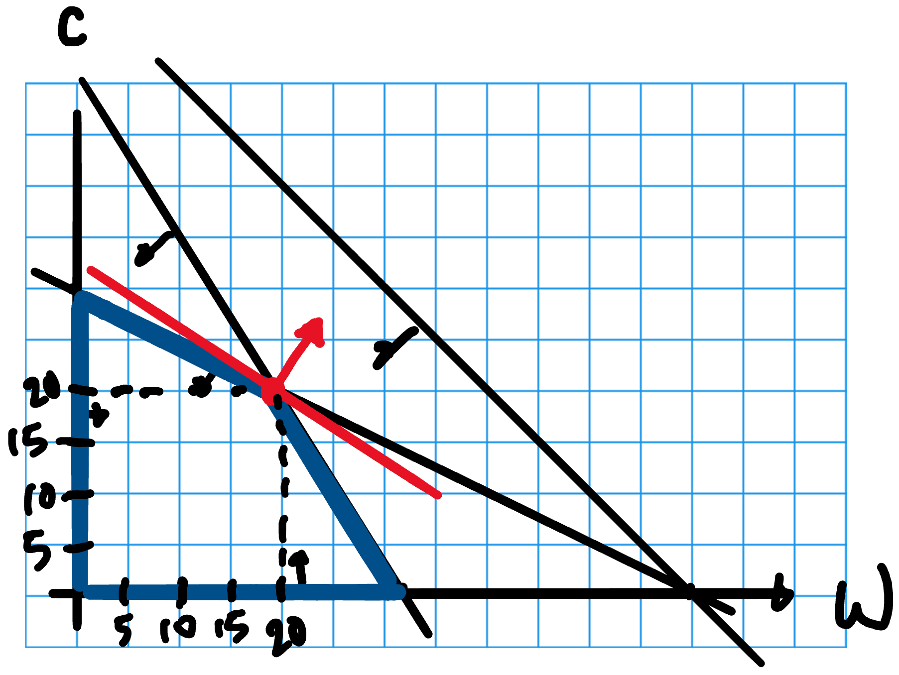
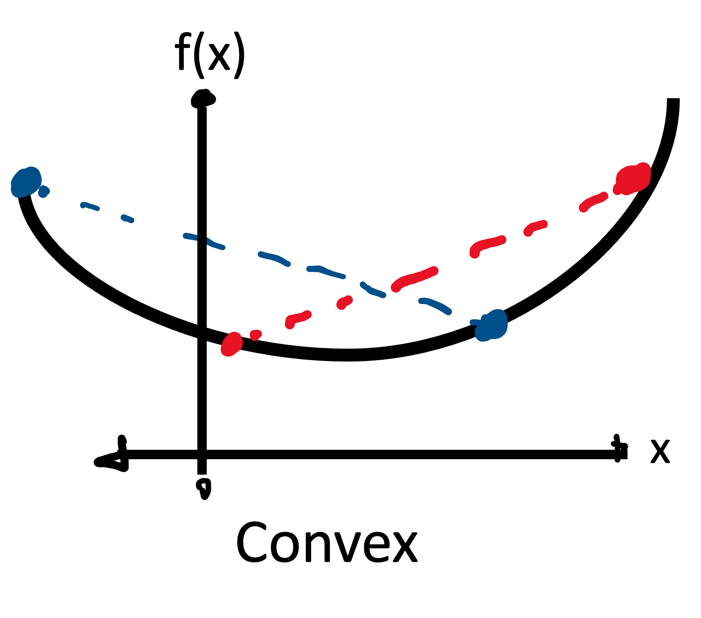
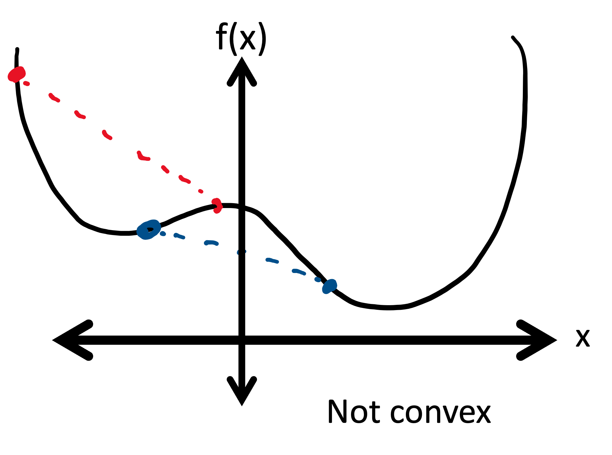
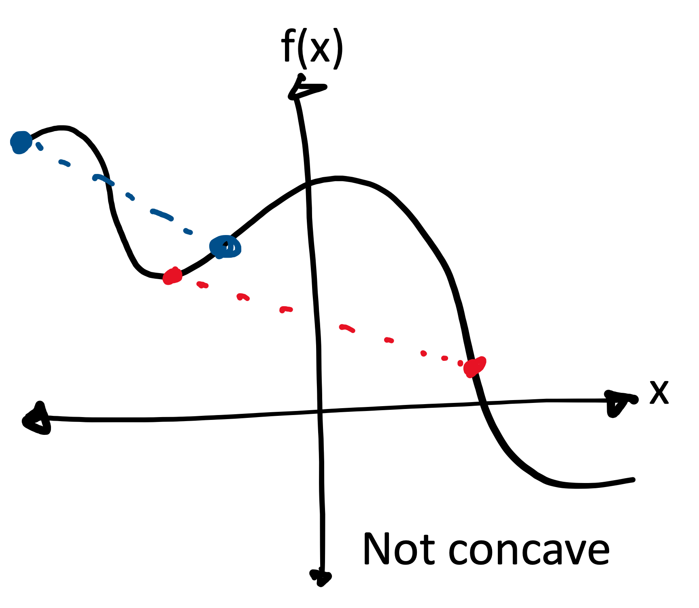
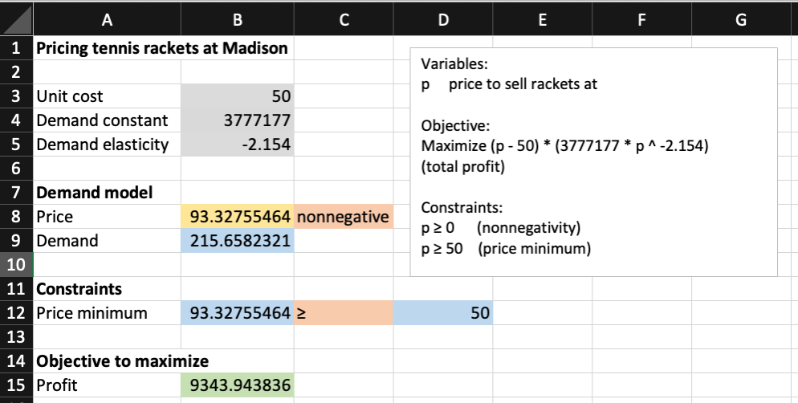
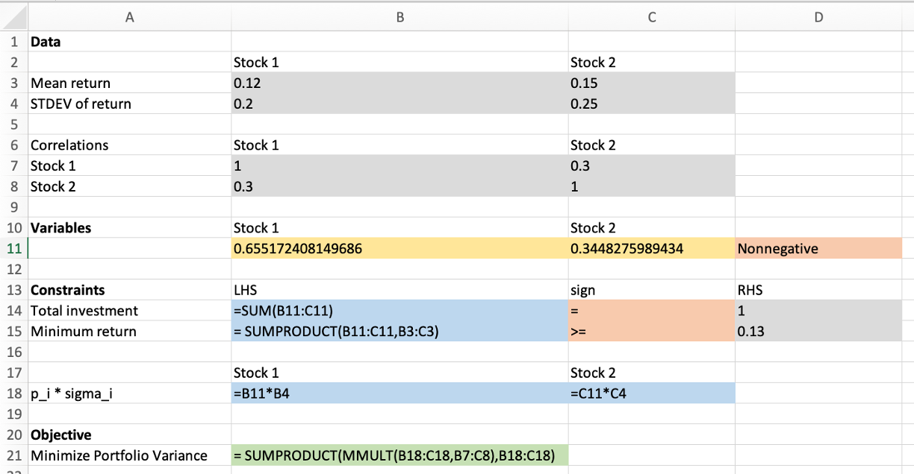

Nonlinear optimization models
MGMT 306
Purdue University
What is a nonlinear optimization model?
- A nonlinear optimization model or a nonlinear program (NLP) model is a model (variables, objective function, constraints) where
- Objective function may be nonlinear
- Each constraint is of the form: \[\text{function of decision variables} \leq \text{constant}\] \[\text{function of decision variables} = \text{constant}\] \[\text{function of decision variables} \geq \text{constant}\]
Example NLP Model
- Variables: \(x\) and \(y\)
- Objective and constraints:
\[\begin{aligned} \max\quad&x^2 - y^2 + x + 2y - \sin(2x)\\ \text{s.t.}\quad& x^2+y^2\leq 1\\ & x,y \geq 0 \end{aligned}\]
Practical examples of nonlinearity
Effect of advertising on sales:
- Relationship between advertising dollars and sales is nonlinear
Pricing models:
- Revenue is price multiplied by quantity sold
- Quantity sold, itself, will depend on price
- So objective might be \(p \cdot q(p)\)
Practical examples of nonlinearity (continued)
Portfolio optimization models:
- If we measure the risk of a portfolio of investments as the variance of the portfolio, this is a nonlinear function in the amounts invested into each component of the portfolio (diversification)
Location Analysis Models
- If decision variables \((x,y)\) represent coordinates of a facility, then the distance between \((x,y)\) and another facility, say \((0,0)\), is measured by Pythagoras’ Theorem: \(\sqrt{x^2+y^2}\)
Takeaway: NLP models are more realistic than LP models for these problems
What can go wrong for NLP Models?
- How Solver will attempt to solve these problems:
- Start at some feasible solution
- Repeatedly step in the direction that improves objective value, while remaining feasible
- Stop if you cannot improve the objective value any more
- This works when applied to LPs

What can go wrong for NLP Models? (Continued)
NLP Solver may get stuck at a suboptimal solution (one that is not optimal)
- A local optimal solution is a solution that is better than all nearby feasible solutions
- A global optimal solution is a solution that is better than all feasible solutions
2D Illustration of what can go wrong
- Beware. NLP Solver may give you a different solution depending on where it starts
NLP Models where Solver can find the Globally Optimal Solution
Convex functions
- A function is convex if given any two points on the graph of the function, the line segment connecting those two points lies above the function


Concave functions
- A function is concave if given any two points on the graph of the function, the line segment connecting those two points lies below the function


When do we get global solutions?
The NLP Solver will always find a global solution for the following types of problems:
\[\begin{aligned} \min\quad&\text{(convex objective function)}\\ \text{s.t.}\quad& \text{(linear constraints)} \end{aligned}\]
\[\begin{aligned} \max\quad&\text{(concave objective function)}\\ \text{s.t.}\quad& \text{(linear constraints)} \end{aligned}\]
Intuition: NLP Solver cannot get stuck at a non-global optimum
Recap
- What you should know:
- What is a nonlinear program?
- What is a local maximum/minimum/optimum?
- What is a global maximum/minimum/optimum?
- What are the pros and cons of NLP models and the NLP solver?
- Visually identify a convex/concave function in one variable
- Conditions for when NLP solver can find a globally optimal solution
- What you do not need to know:
- How to check algebraically if a function is convex/concave. However, we will soon see a few examples of convex/concave functions that you should remember are convex/concave
Pricing Model example
Problem Description
- Madison Company manufactures and retails tennis rackets
- The company wants to determine the price that maximizes its profit
- The unit cost is $50, so Madison must charge at least $50 per racket
- Demand falls sharply when price increases: \[Q=3,777,177 P^{−2.154}\]
- Write an NLP model to price tennis rackets
NLP Model for Madison
Variables \[\begin{aligned} &P&&\text{price we set for Madison's tennis rackets} \end{aligned}\]
Model \[\begin{aligned} \max\quad&(P-50) \cdot (3777177 \cdot P^{-2.154})&&\text{(profit)}\\ \text{s.t.}\quad& P \geq 0&&\text{(nonnegativity)}\\ & P \geq 50&&\text{(price minimum)} \end{aligned}\]
Spreadsheet solution
- Remember to use GRG Nonlinear as the Solving Method
Interpreting the optimal solution
- The NLP Solver finds the optimal price $93.32, resulting in the maximum profit $9,343.94
- Did we find the optimal solution?
- The objective function \((P – 50) (3777177 P ^{-2.154})\) is not a concave function so we are not guaranteed to find the optimal solution (may depend on the initial input)
- Test: See what happens if we start the NLP solver with price =
1E16.
Pricing formula
- Demand in terms of price is often modeled as \[ Q = a P^E\]
- \(Q\) is the quantity demanded, \(a\) is a constant, \(P\) is the sales price, and \(E\) is the elasticity of demand
- Roughly: a 1% increase in price leads to an E% increase in sales
Variation with production capacity
Suppose the Madison company has a production capacity of 150 tennis rackets. How would the model change?
Model \[\begin{aligned} \max\quad&(P-50) \cdot \min\left(3777177 \cdot P^{-2.154}, 150\right)&&\text{(profit)}\\ \text{s.t.}\quad& P \geq 0&&\text{(nonnegativity)}\\ & P \geq 50&&\text{(price minimum)} \end{aligned}\]
Explanation: The new objective function multplies price by a \(\min(\dots)\) term. This formula returns the smaller of the two expressions. When demand is less than 150, the objective is just the original objective. When demand is larger than 150, the objective is \((P-50)\cdot 150\)
Variation with production capacity – alternate formulation
Model \[\begin{aligned} \max\quad&(P-50) \cdot (377177 \cdot P^{-2.154})&&\text{(profit)}\\ \text{s.t.}\quad& P \geq 0&&\text{(nonnegativity)}\\ & P \geq 50&&\text{(price minimum)}\\ & 377177 \cdot P^{-2.154} \leq 150&&\text{(production capacity)} \end{aligned}\]
Explanation: We know the optimal price cannot be lower than the price that would result in demand being larger than 150.
Portfolio optimization
Portfolio Optimization Model
- A portfolio is made up of multiple investment products (e.g, stocks)
- We will use variance to measure the risk of a portfolio
- We want our portfolio to have a high expected rate of return and to have a low variance
- How should we allocate our investments in different investment products?
Refresher from STAT 225/MGMT 305
- Assume \(X_1\) and \(X_2\) are random variables and \(p_1\) and \(p_2\) are constants
- Fact. Expectation is linear: \[E\left[p_1X_1 + p_2 X_2\right]= p_1 E\left[X_1\right] + p_2 E\left[X_2\right]\]
- Fact. Variance is nonlinear: \[\text{Var}\left[p_1X_1 + p_2 X_2\right]= p_1^2 \text{Var}\left[X_1\right] + p_2^2 \text{Var}\left[X_2\right] + 2p_1p_2\text{Cov}(X_1,X_2)\]
- Covariance between \(X_1\) and \(X_2\) can be calculated as \[\text{Cov}(X_1,X_2) = \sigma_{1,2} = r_{1,2}\sigma_1\sigma_2\] where \(\sigma_i^2\) is variance of \(X_i\), \(r_{1,2}\) is the correlation between \(X_1\) and \(X_2\)
- Fact. Standard deviation of a RV is the square root of its variance
Portfolio optimization model - Example
Let \(X_1\) and \(X_2\) represent the annual rate of return of two different stocks \[E[X_1]=0.12\quad\text{Var}[X_1]=0.2^2 = 0.04\] \[E[X_2]=0.15\quad\text{Var}[X_2]=0.25^2 = 0.0625\] \[r_{1,2}=0.3\]
We want an expected annual rate of return of at least 0.13
Use an NLP model to minimize variance among all such portfolios
Portfolio optimization - NLP Model
Variables \[\begin{aligned} &p_1&&\text{fraction invested in stock 1}\\ &p_2&&\text{fraction invested in stock 2} \end{aligned}\]
Model \[\begin{aligned} \min\quad&0.04 p1^{2} + 0.0625 p2^{2} + 0.03 \cdot p1 \cdot p2&\text{(variance)}\\ \text{s.t.}\quad& p1 + p2 = 1&\text{(total fraction)}\\ & 0.12 p1 + 0.15 p2 \geq 0.13&\text{(min expected return)}\\ & p1, p2 \geq 0&\text{(nonnegativity)} \end{aligned}\]
Portfolio optimization model convexity
The variance of a linear combination of random variables is always convex \[Var(a_1 X_1 + a_2 X_2 + a_3 X_3 + ... )\]
is a convex function of \(a_1\), \(a_2\), \(a_3\), …
Thus, minimizing the variance subject to linear constraints is a situation where the NLP solver will always find the global minimum
Portfolio optimization model in Excel
- We will rewrite the variance in the following form
\[\begin{aligned} \text{Var}[p_1X_1 + p_2 X_2] &= (p_1\sigma_1)^2 + (p_2 \sigma_2)^2 + 2r_{1,2}(p_1\sigma_1)(p_2\sigma_2)\\ &= \begin{pmatrix}p_1\sigma_1 & p_2\sigma_2\end{pmatrix} \begin{pmatrix}1 & r_{1,2}\\ r_{1,2} & 1\end{pmatrix} \begin{pmatrix}p_1\sigma_1 \\ p_2\sigma_2\end{pmatrix} \end{aligned}\]
- Vector on either side is standard deviation of each investment
- Matrix in the middle is the correlation matrix
Portfolio optimization model spreadsheet
Facility location
Warehouse Location
- The Lafferty Company wants to locate a warehouse from which it will ship products to four customers.
- The location (in the \(x\)-\(y\) plane) of the four customers and the number of shipments per year needed by each customer are given in the following table:
| Customer | \(x\)-coordinate | \(y\)-coordinate | shipments / year |
|---|---|---|---|
| 1 | 5 | 10 | 200 |
| 2 | 10 | 5 | 150 |
| 3 | 0 | 12 | 200 |
| 4 | 12 | 0 | 300 |
- What is the location for the warehouse that minimizes the total annual distance traveled to and from the warehouse to the customers?
How to calculate distances
- We will use the Pythagorean Theorem to compute the distance between a pair of points
- If \((x,y)\) is the location of the warehouse and \((x_1,y_1)\) is the location of the first customer, then the distance between the warehouse and the first customer is \[\sqrt{(x_1-x)^2 + (y_1-y)^2}\]
Facility Location NLP Model
Variables \[\begin{aligned} &x&&\text{the $x$-coordinate of the new warehouse}\\ &y&&\text{the $y$-coordinate of the new warehouse} \end{aligned}\]
Constraints: None!
Objective: \[\min \quad 2\times 200 \times \sqrt{(5-x)^2 + (10 - y)^2} + 2\times 150 \times \sqrt{(10 - x)^2 + (5-y)^2}+\dots\]
Facility Location NLP Model Convexity
- The distance between two locations is a convex function of the coordinates \[\sqrt{(x_1-x)^2 + (y_1-y)^2}\]
- This is also true for weighted sums of distances (with positive weights)
- So the facility location NLP model is minimizing a convex function over no constraints